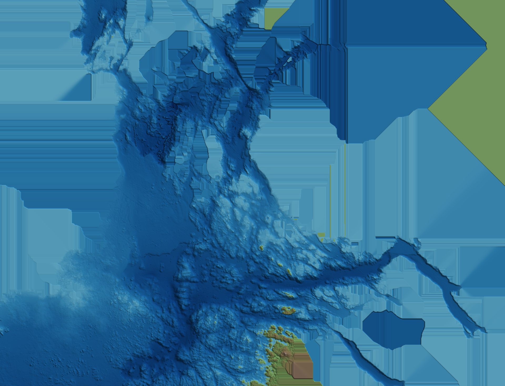

Each pin is a bottom portrait: a camera lowered from a kayak, filed where the GPS swears it was, with the chart's rough depth for that spot. Passes are never overwritten — slide time back and the older portraits return. The backdrop is the Deployment 1 render; pin placement on it is approximate in v1.
